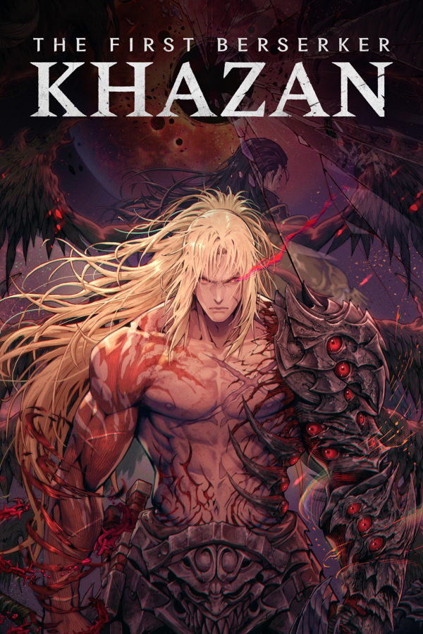

Game profile

The First Berserker: Khazan
Every archived year-end list appearance, including placement and points earned.
About the Game
The First Berserker: Khazan is a hardcore action role-playing game. The player will become Khazan, the great general of the Pelos empire, whom overcame death, and sets out to reveal the incidents that led to his downfall and seek vengeance on his enemies.
| Released | 2025-03-27 |
|---|---|
| Developer | Neople |
| Publisher | Nexon |
| Genres | Action |
| Platforms | PC, Xbox Series S/X, PlayStation 5 |
Steam CloudAtmosphericRPGStory RichThird PersonFantasyDifficultAction-AdventureAction RPGDarkAnimeHack and Slash
Where to Buy
Game information provided by RAWG.
3List appearances
1Years represented
Points by Year
72025 points
List History
| Year | Source | List | Placement | Points |
|---|---|---|---|---|
| 2025 | GameSpot | The Best Games Of 2025 | Unranked | 1 |
| 2025 | NPR | The best games of 2025, picked by NPR's staff | Unranked | 1 |
| 2025 | The Review Geek | 15 Best Video Games of 2025 | TheReviewGeek Recommends | 6 | 5 |